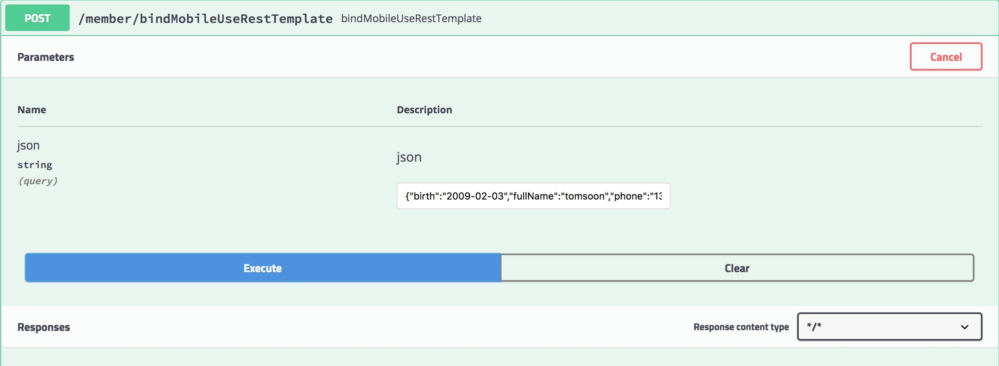
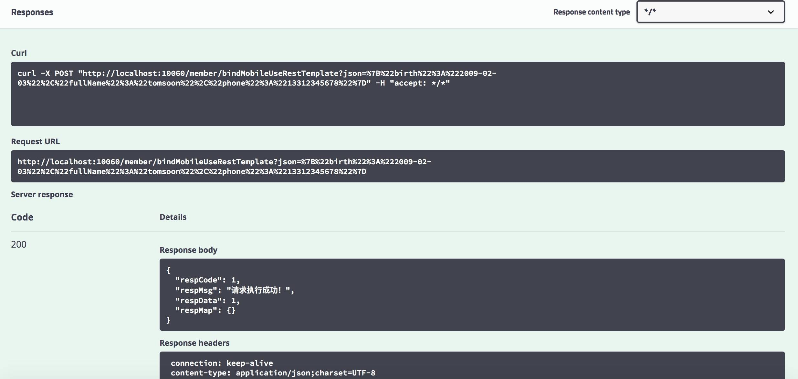
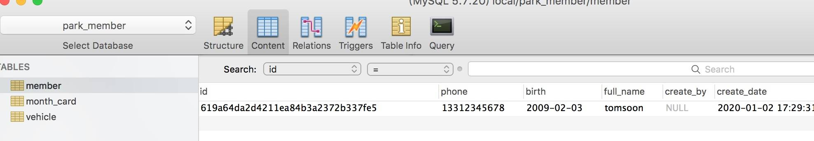
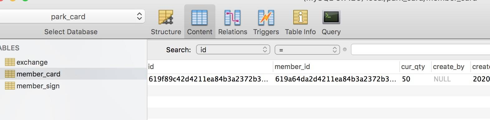
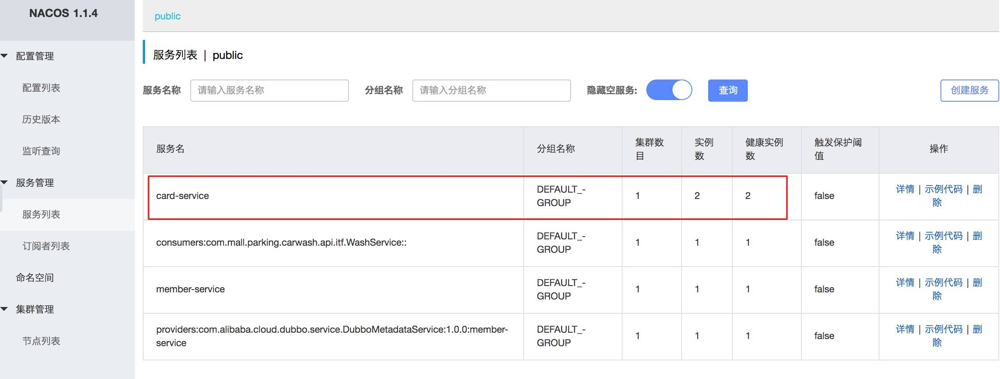

- 00 开篇导读.md.html
- 01 以真实“商场停车”业务切入——需求分析.md.html
- 02 具象业务需求再抽象分解——系统设计.md.html
- 03 第一个 Spring Boot 子服务——会员服务.md.html
- 04 如何维护接口文档供外部调用——在线接口文档管理.md.html
- 05 认识 Spring Cloud 与 Spring Cloud Alibaba 项目.md.html
- 06 服务多不易管理如何破——服务注册与发现.md.html
- 07 如何调用本业务模块外的服务——服务调用.md.html
- 08 服务响应慢或服务不可用怎么办——快速失败与服务降级.md.html
- 09 热更新一样更新服务的参数配置——分布式配置中心.md.html
- 10 如何高效读取计费规则等热数据——分布式缓存.md.html
- 11 多实例下的定时任务如何避免重复执行——分布式定时任务.md.html
- 12 同一套服务如何应对不同终端的需求——服务适配.md.html
- 13 采用消息驱动方式处理扣费通知——集成消息中间件.md.html
- 14 Spring Cloud 与 Dubbo 冲突吗——强强联合.md.html
- 15 破解服务中共性问题的繁琐处理方式——接入 API 网关.md.html
- 16 服务压力大系统响应慢如何破——网关流量控制.md.html
- 17 集成网关后怎么做安全验证——统一鉴权.md.html
- 18 多模块下的接口 API 如何统一管理——聚合 API.md.html
- 19 数据分库后如何确保数据完整性——分布式事务.md.html
- 20 优惠券如何避免超兑——引入分布式锁.md.html
- 21 如何查看各服务的健康状况——系统应用监控.md.html
- 22 如何确定一次完整的请求过程——服务链路跟踪.md.html
- 23 结束语.md.html
07 如何调用本业务模块外的服务——服务调用
上篇已经引入 Nacos 基础组件，完成了服务注册与发现机制，可以将所有服务统一的管理配置起来，方便服务间调用。本篇将结合需求点，进行服务间调用，完成功能开发。
几种服务调用方式
服务间调用常见的两种方式：RPC 与 HTTP，RPC 全称 Remote Produce Call 远程过程调用，速度快，效率高，早期的 WebService 接口，现在热门的 Dubbo、gRPC 、Thrift、Motan 等，都是 RPC 的典型代表，有兴趣的小伙伴可以查找相关的资料，深入了解下。
HTTP 协议（HyperText Transfer Protocol，超文本传输协议）是因特网上应用最为广泛的一种网络传输协议，所有的 WWW 文件都必须遵守这个标准。对服务的提供者和调用方没有任何语言限定，更符合微服务语言无关的理念。时下热门的 RESTful 形式的开发方式，也是通过 HTTP 协议来实现的。
本次案例更多的考虑到简捷性以及 Spring Cloud 的基础特性，决定采用 HTTP 的形式，进行接口交互，完成服务间的调用工作。Spring Cloud 体系下常用的调用方式有：RestTemplate 、 Ribbon 和 Feign 这三种。
RestTemplate，是 Spring 提供的用于访问 Rest 服务的客户端，RestTemplate 提供了多种便捷访问远程 Http 服务的方法，能够大大提高客户端的编写效率。
Ribbon，由 Netflix 出品，更为人熟知的作用是客户端的 Load Balance（负载均衡）。
Feign，同样由 Netflix 出品，是一个更加方便的 HTTP 客户端，用起来就像调用本地方法，完全感觉不到是调用的远程方法。内部也使用了 Ribbon 来做负载均衡功能。
由于 Ribbon 已经融合在 Feign 中，下面就只介绍 RestTemplate 和 Feign 的使用方法。
RestTemplate 的应用
功能需求：会员绑定手机号时，同时给其增加相应的积分。会员绑定手机号在会员服务中完成，增加会员积分在积分服务中完成。请求路径是客户端->会员服务->积分服务。
响应客户端请求的方法
@RequestMapping(value = "/bindMobileUseRestTemplate", method = RequestMethod.POST)
public CommonResult<Integer> bindMobileUseRestTemplate(String json) throws BusinessException{
CommonResult<Integer> result = new CommonResult<>();
log.info("bind mobile param = " + json);
int rtn = memberService.bindMobileUseRestTemplate(json);
result.setRespData(rtn);
return result;
}
做好 RestTemplate 的配置工作，否则无法正常使用。
@Configuration
public class RestTemplateConfig {
@Bean
public RestTemplate restTemplate(ClientHttpRequestFactory simpleClientHttpRequestFactory){
return new RestTemplate(simpleClientHttpRequestFactory);
}
@Bean
public ClientHttpRequestFactory simpleClientHttpRequestFactory(){
SimpleClientHttpRequestFactory factory = new SimpleClientHttpRequestFactory();
return factory;
}
}
在 MemberService 中处理请求，逻辑如下：
@Autowired
RestTemplate restTemplate;
@Override
public int bindMobileUseRestTemplate(String json) throws BusinessException {
Member member = JSONObject.parseObject(json, Member.class);
int rtn = memberMapper.insertSelective(member);
// invoke another service
if (rtn > 0) {
MemberCard card = new MemberCard();
card.setMemberId(member.getId());
card.setCurQty("50");
MultiValueMap<String, String> requestMap = new LinkedMultiValueMap<String, String>();
requestMap.add("json", JSONObject.toJSONString(card).toString());
HttpEntity<MultiValueMap<String, String>> requestEntity = new HttpEntity<MultiValueMap<String, String>>(
requestMap, null);
String jsonResult = restTemplate.postForObject("http://localhost:10461/card/addCard", requestEntity,
String.class);
log.info("creata member card suc!" + jsonResult);
}
return rtn;
}
采用 postForObject 形式请求积分服务中的生成积分记录的方法，并传递相应参数。积分子服务中方法比较简单，接受调用请求的方法：
@RequestMapping("card")
@RestController
@Slf4j
public class MemberCardController {
@Autowired
MemberCardService cardService;
@RequestMapping(value = "/addCard", method = RequestMethod.POST)
public CommonResult<Integer> addCard(String json) throws BusinessException {
log.info("eclise service example: begin add member card = " + json);
//log.info("jar service example: begin add member card = " + json);
CommonResult<Integer> result = new CommonResult<>();
int rtn = cardService.addMemberCard(json);
result.setRespData(rtn);
return result;
}
}
实际业务逻辑处理部分由 MemberCardService 接口中完成。
@Service
@Slf4j
public class MemberCardServiceImpl implements MemberCardService {
@Autowired
MemberCardMapper cardMapper;
@Override
public int addMemberCard(String json) throws BusinessException {
MemberCard card = JSONObject.parseObject(json,MemberCard.class);
log.info("add member card " +json);
return cardMapper.insertSelective(card);
}
}
分别启动会员服务、积分服务两个项目，通过 Swagger 接口 UI 作一个简单测试。


RestTemplate 默认依赖 JDK 提供 HTTP 连接的能力，针对 HTTP 请求，提供了不同的方法可供使用，相对于原生的 HTTP 请求是一个进步，但经过上面的代码使用，发现还是不够优雅。能不能像调用本地接口一样，调用第三方的服务呢？下面引入 Feign 的应用，绝对让你喜欢上 Feign 的调用方式。
Feign 的应用
Fegin 的调用最大的便利之处在于，屏蔽底层的连接逻辑，让你可以像调用本地接口一样调用第三方服务，代码量更少更优雅。当然，必须在服务注册中心的协调下才能正常完成服务调用，而 RestTemplate 并不关心服务注册心是否正常运行。
引入 Feign
Feign 是由 Netflix 开发出来的另外一种实现负载均衡的开源框架，它封装了 Ribbon 和 RestTemplate，实现了 WebService 的面向接口编程，进一步的减低了项目的耦合度，因为它封装了 Riboon 和 RestTemplate ，所以它具有这两种框架的功能。 在会员模块的 pom.xml 中添加 jar 引用
<dependency>
<groupId>org.springframework.cloud</groupId>
<artifactId>spring-cloud-starter-openfeign</artifactId>
</dependency>
在模块启动类中增加 @EnableFeignClients 注解，才能正常使用 Feign 相关功能，启动时开启对 ＠FeignClient 注解的包扫描，并且扫描到相关的接口客户端。
//#client 目录为 feign 接口所在目录
@EnableFeignClients(basePackages = "com.mall.parking.member.client")
前端请求响应方法
@RequestMapping(value = "/bindMobile", method = RequestMethod.POST)
public CommonResult<Integer> bindMobile(String json) throws BusinessException{
CommonResult<Integer> result = new CommonResult<>();
log.info("bind mobile param = " + json);
int rtn = memberService.bindMobile(json);
result.setRespData(rtn);
return result;
}
接口编写
编写 MemberCardClient，与积分服务调用时使用，其中的接口与积分服务中的相关方法实行一对一绑定。
@FeignClient(value = "card-service")
public interface MemberCardClient {
@RequestMapping(value = "/card/addCard", method = RequestMethod.POST)
public CommonResult<Integer> addCard(@RequestParam(value = "json") String json) throws BusinessException;
@RequestMapping(value = "/card/updateCard", method = RequestMethod.POST)
public CommonResult<Integer> updateCard(@RequestParam(value = "json") String json) throws BusinessException;
}
注意是 RequestParam 不是 PathVariable ， PathVariable 是从路径中取值，RequestParam 是从参数中取值，用法不一。
使用时，直接 @Autowired 像采用本地接口一样使用即可，至此完成代码的编写，下面再来验证逻辑的准确性。
- 保证 nacos-server 启动中
- 分别启动 parking-member，parking-card 子服务
- 通过 parking-member 的 swagger-ui 界面，调用会员绑定手机号接口(或采用 PostMan 工具)
正常情况下，park-member，park-card 两个库中数据表均有数据生成。


那么，fallback 何时起作用呢？很好验证，当积分服务关闭后，再重新调用积分服务中的生成积分方法，会发现直接调用的是 MemberCardServiceFallback 中的方法，直接响应给调用方，避免了调用超时时，长时间的等待。
负载均衡
前文已经提到 Feign 中已经默认集成了 Ribbon 功能，所以可以通过 Feign 直接实现负载均衡。启动两个 card-service 实例，打开 Nacos 控制台，发现实例已经注册成功。再通过 swagger-ui 或 PostMan 工具访问多访问几次 bindMobile 方法，通过控制台日志输出，可以发现请求在两个 card-service 实例中轮番执行。

如何改变默认的负载均衡策略呢？先弄清楚 Ribbon 提供了几种负载策略：随机、轮询、重试、响应时间权重和最空闲连接，分别对应如下
com.netflix.loadbalancer.RandomRule com.netflix.loadbalancer.RoundRobinRule com.netflix.loadbalancer.RetryRule com.netflix.loadbalancer.WeightedResponseTimeRule com.netflix.loadbalancer.BestAvailableRule
由于是客户端负载均衡，必须配置在服务调用者项目中增加如下配置来达到调整的目的。
card-service: ribbon: NFLoadBalancerRuleClassName: com.netflix.loadbalancer.RandomRule
也可以通过 Java 代码的形式调整，放置在项目启动类的下面
@Bean
public IRule ribbonRule() {
// 负载均衡规则，改为随机
return new RandomRule();
// return new BestAvailableRule();
// return new WeightedResponseTimeRule();
// return new RoundRobinRule();
// return new RetryRule();
}
至此，我们通过一个"会员绑定手机号，并增加会员相应积分"的功能，通过两种方式完成一个正常的服务调用，并测试了客户端负载均衡的配置及使用。
课外作业
掌握了服务间调用后，在不考虑非业务功能的情况下，基本可以将本案例中大部分业务逻辑代码编写完成，可参照自己拆解的用户故事，或者主要的业务流程图，现在就动手，把代码完善起来吧。
服务调用是微服务间频繁使用的功能，选定一个简捷的调用方式尤其重要。照例留下一道思考题吧：本文用到了客户端负载均衡技术，它与我们时常提到的负载均衡技术有什么不同吗？